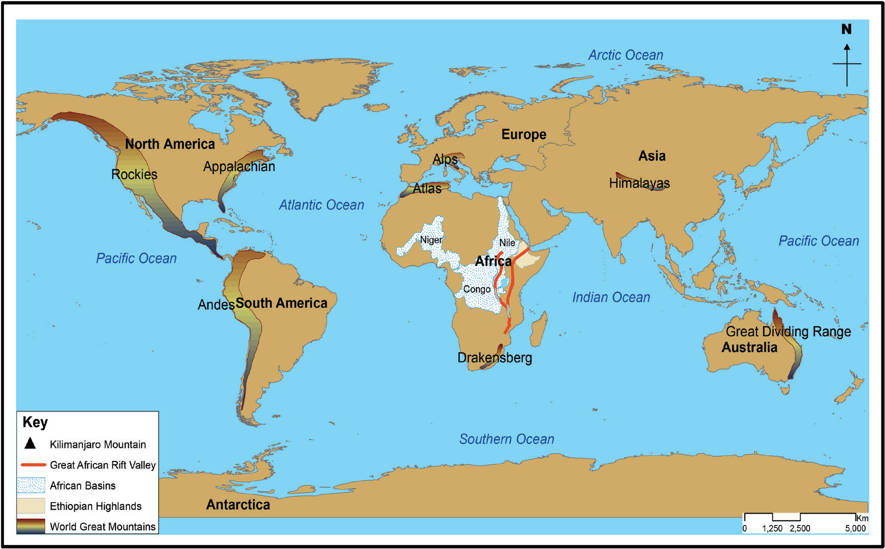

Major relief features of the continents
Each continent has its unique geographical features. The surface of any continent is not regular in shape and elevation. The height above the sea level (altitude) and slope (degree of steepness of the land) give rise to different relief features. In this regard, the main relief features of the continents include Plains, plateaus, mountains, and basins. Other relief features include hills and valleys. Figure 4.3 shows the major relief features of the continents.

Plains
Plains are continuous stretches of comparatively flat lands that do not change much in elevation. For example, the Serengeti plains of Tanzania, Siberia in Asia, North European plains, Indo- Gangetic plains in India, and the Great Central plains of North America. Many extensive plains result from down warping of the earth’s crust. Plains found along coastal areas are known as coastal plains. These include the coastal plains of Tanzania, Kenya and Mozambique.
Plateaus
A plateau is an extensive high altitude area with more or less uniform summit level. Plateaus significantly rise above the surrounding area with one or two sides with steep slopes. Plateaus are formed when forces from within the Earth uplift a large land area. Uplifted areas of level or undulating land form plateaus, sometimes called tectonic plateaus.
When an uplifted area slopes down to sloping lower land, it is a table land. South African, Arabian, and Spanish plateaus